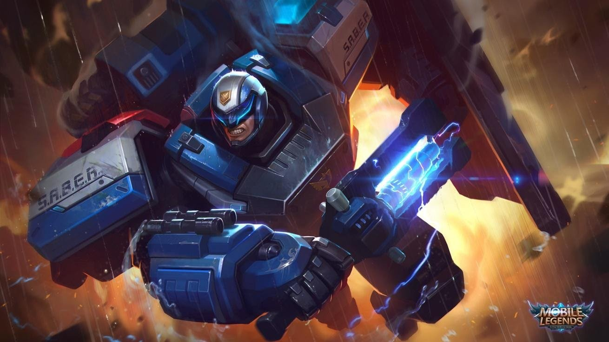
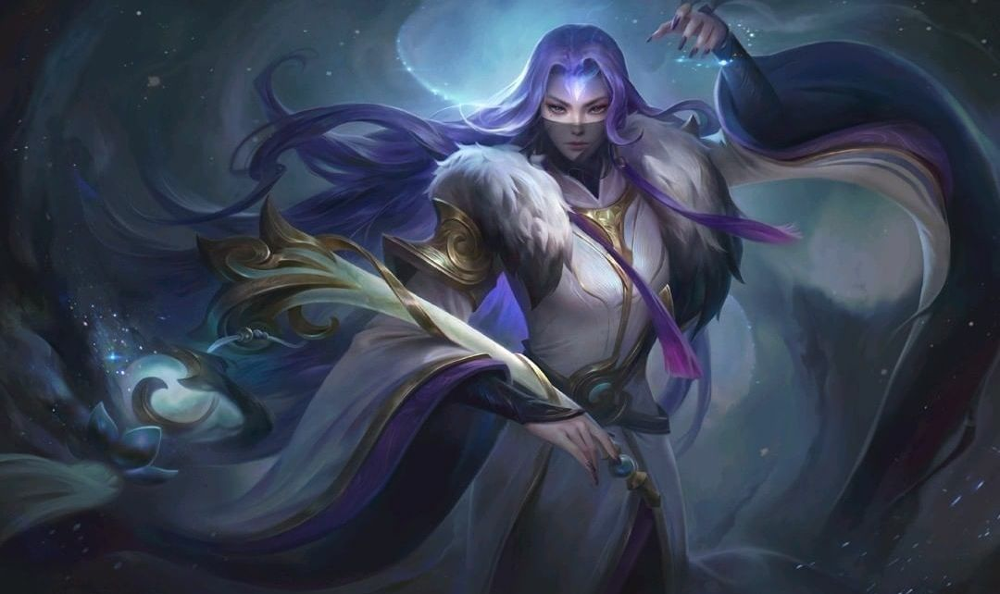
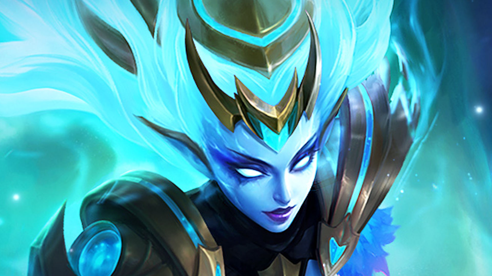

Tanks heroes are the most durable among all in mobile legends. These front-line giants help in attacking enemies. They're usually found leading the charge, choosing the right times and situations to initiate aggression. Many tanks can also protect their more fragile teammates by stunning or pushing around dangerous foes and limiting their damage potential. In mobile legends, most classes of heroes are really versatile in terms of abilities and with the item crafting variations a "tank" can be played as a DPS if you choose the right equipment. Usually, tanks are laning on the bottom tower. Tank has high defense and hit point, but low damage. When used properly, a tank could be the strongest hero in the game.
A magician (abbreviated as mage) is a hero with a longer range, ability-based area of effect damage, and crowd control that they may utilize to strike from a distance. Mages primarily focus on magic skills that deals magic damage, usually burst damage, and as a consequence, they spend a lot of gold on equipment that allows them to do more damage and have shorter skill cooldowns. Though mages typically focus on killing prime targets in combat, they can also use their innate crowd control and utility to manipulate opponents, protecting their team from them or setting them up for a takedown, and in the right circumstances, can damage and control multiple enemies at the same time. Regardless of their might, mages are fundamentally frail and succumb fast to direct attacks.
An assassin is an agile hero that specializes in killing or disabling roaming targets picking them of as they try to replenish HP. Focused on infiltration, deception, and mobility, assassins are opportunistic hunters who find favorable moments within a fight before jumping into the fray. Regardless of the size of the enemy team, assassins specializes in positioning and artful killing. They strike when the time is right no sooner, no later. Assassins are more suitable to be played by experienced players as they have low HP and high burst damage. They are ideal for taking out opponents easily, but are easier to be killed due to bad positioning and wrong timing. Assassins are classified into three types: pure, primary, and secondary.
